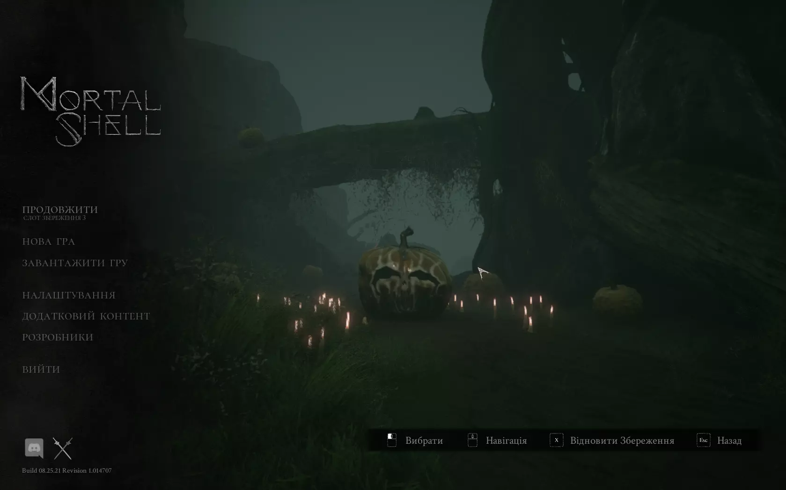
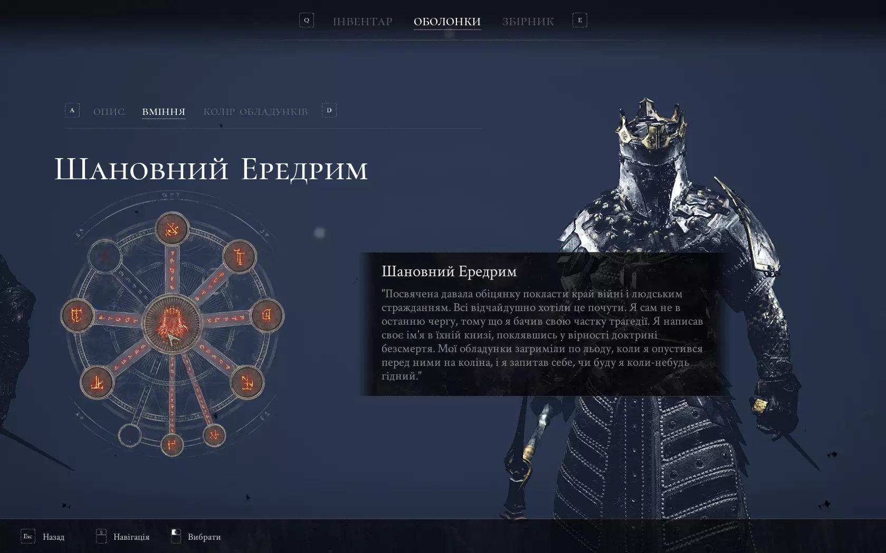
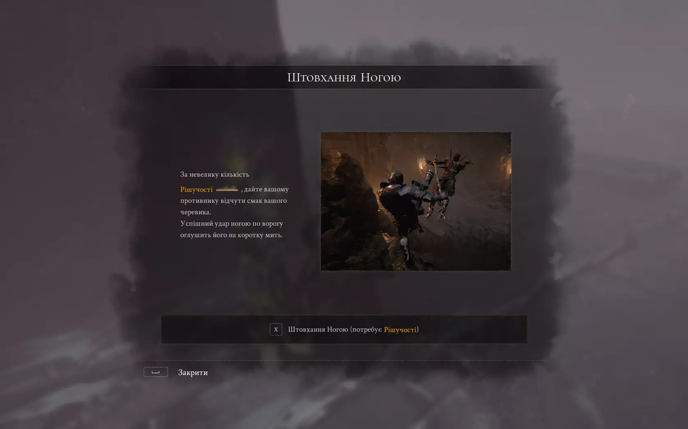
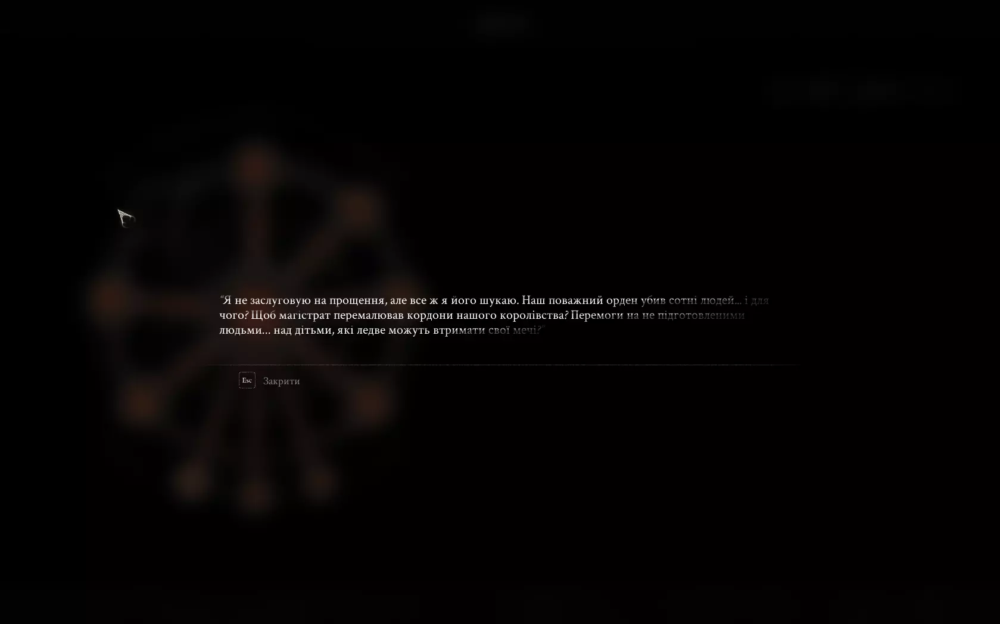

Cистемні вимоги:
ОС: Windows 7 / 8 / 10 (64-bit)
Процесор: Core i5-4590 / FX 8350
Відеоадаптер: GTX 970 / Radeon R9 290
Оперативна пам’ять: 8 GB
DirectX: версії 11
Мережа: -
Місце на диску: 15 GB
Жанр: Екшн, RPG, Souls-like, Dark Fantasy
Розробник: Cold Symmetry
Видавець: Playstack
Дата виходу: 18 серпня 2020 р.
Мова інтерфейсу: українська, MULTI
Мова озвучення: англійська
Локалізація (українська) від Joymaloor (або Bigidun)





Опис гри:
Mortal Shell - це нещадний і глибоко продуманий рольовий бойовик, який впробовує ваш розум і стійкість у зруйнованому світі. Поки залишки людства в'януть і гниють, фанатичні вороги робирають руїни. Вони безжальні, тому для виживання потрібні неабиякі інстинкти, підвищена настороженість і чудова влучність. Знаходьте приховані святилища фанатичних послідовників та пізнайте своє справжнє призначення.
Підкоряйте собі загиблих воїнів
Вам належить знайти останки переможених воїнів. Пробудіть їх смертні оболонки, захопіть тіла та освойте нові способи ведення бою.
Залізо точить залізо
Обмірковуйте кожен крок та стратегію у бою. Пускайте в бій свій клинок, тільки коли з'являється можливість завдати удару.
Воюйте з грізними ворогами
Ваш шлях усіяний відчайдушними супротивниками, що поклоняються таємничим богам. Ви зустрінете жалюгідних і зловісних створінь, але не дозволяйте страху перегородити вам шлях. Наберіться сміливості і гляньте йому в очі.
Завантажити